This chapter introduces several built-in data structures for use in Linux kernel code. As with any large software project, the Linux kernel provides these generic data structures and primitives to encourage code reuse. Kernel developers should use these data structures whenever possible and not “roll your own” solutions. In the following sections, we cover the most useful of these generic data structures, which are the following:
• Queues
• Maps
We conclude the chapter with a discussion on algorithmic complexity, the ease with which algorithms and data structures scale to support ever larger inputs.
The linked list is the simplest and most common data structure in the Linux kernel. A linked list is a data structure that allows the storage and manipulation of a variable number of elements, called the nodes of the list. Unlike in a static array, the elements in a linked list are dynamically created and inserted into the list. This enables the management of a varying number of elements unknown at compile time. Because the elements are created at different times, they do not necessarily occupy contiguous regions in memory. Therefore, the elements need to be linked together; thus each element in the list contains a pointer to the next element. As elements are added to or removed from the list, the pointer to the next node is simply adjusted.
The simplest data structure representing such a linked list might look similar to the following:
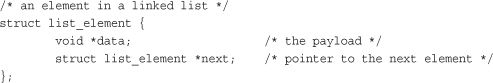
Figure 6.1 is a linked list.
Figure 6.1. A singly linked list.
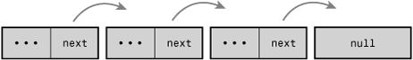
In some linked lists, each element also contains a pointer to the previous element. These lists are called doubly linked lists because they are linked both forward and backward. Linked lists, such as the list in Figure 6.1, that do not have a pointer to the previous element are called singly linked lists.
A data structure representing a doubly linked list would look similar to this:
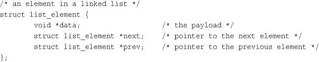
Figure 6.2 is a doubly linked list.
Figure 6.2. A doubly linked list.
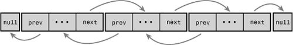
Normally, because the last element in a linked list has no next element, it is set to point to a special value, such as NULL, to indicate it is the last element in the list. In some linked lists, the last element does not point to a special value. Instead, it points back to the first value. This linked list is called a circular linked list because the list is cyclic. Circular linked lists can come in both doubly and singly linked versions. In a circular doubly linked list, the first node’s “previous” pointer points at the last node. Figures 6.3 and 6.4 are singly and doubly circular linked lists, respectively.
Figure 6.3. A circular singly linked list.
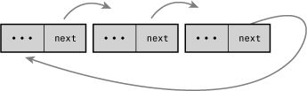
Figure 6.4. A circular doubly linked list.
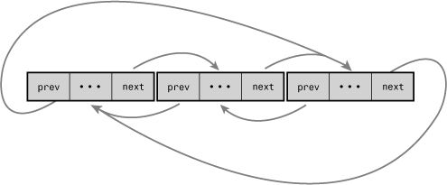
Although the Linux kernel’s linked list implementation is unique, it is fundamentally a circular doubly linked list. Using this type of linked list provides the greatest flexibility.
Movement through a linked list occurs linearly. You visit one element, follow the next pointer, and visit the next element. Rinse and repeat. This is the easiest method of moving through a linked list, and the one for which linked lists are best suited. Linked lists are ill-suited for use cases where random access is an important operation. Instead, you use linked lists when iterating over the whole list is important and the dynamic addition and removal of elements is required.
In linked list implementations, the first element is often represented by a special pointer—called the head—that enables easy access to the “start” of the list. In a noncircular-linked list, the last element is delineated by its next pointer being NULL. In a circular-linked list, the last element is delineated because it points to the head element. Traversing the list, therefore, occurs linearly through each element from the first to the last. In a doubly linked list, movement can also occur backward, linearly from the last element to the first. Of course, given a specific element in the list, you can iterate backward and forward any number of elements, too. You need not traverse the whole list.
In comparison to most linked list implementations—including the generic approach described in the previous sections—the Linux kernel’s implementation is unique. Recall from the earlier discussion that data (or a grouping of data, such as a struct) is maintained in a linked list by adding a next (and perhaps a previous) node pointer to the data. For example, assume we had a fox structure to describe that member of the Canidae family:
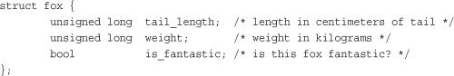
The common pattern for storing this structure in a linked list is to embed the list pointer in the structure. For example:
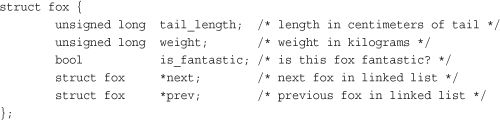
The Linux kernel approach is different. Instead of turning the structure into a linked list, the Linux approach is to embed a linked list node in the structure!
In the old days, there were multiple implementations of linked lists in the kernel. A single, powerful linked list implementation was needed to remove duplicate code. During the 2.1 kernel development series, the official kernel linked-list implementation was introduced. All existing uses of linked lists now use the official implementation; do not reinvent the wheel!
The linked-list code is declared in the header file <linux/list.h> and the data structure is simple:
struct list_head {
struct list_head *next
struct list_head *prev;
};
The next pointer points to the next list node, and the prev pointer points to the previous list node. Yet, seemingly, this is not particularly useful. What value is a giant linked list...of linked list nodes? The utility is in how the list_head structure is used:
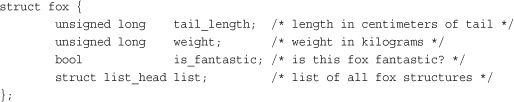
With this, list.next in fox points to the next element, and list.prev in fox points to the previous. Now this is becoming useful, but it gets better. The kernel provides a family of routines to manipulate linked lists. For example, the list_add() method adds a new node to an existing linked list. These methods, however, are generic: They accept only list_head structures. Using the macro container_of(), we can easily find the parent structure containing any given member variable. This is because in C, the offset of a given variable into a structure is fixed by the ABI at compile time.
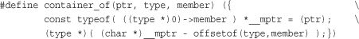
Using container_of(), we can define a simple function to return the parent structure containing any list_head:
#define list_entry(ptr, type, member) \
container_of(ptr, type, member)
Armed with list_entry(), the kernel provides routines to create, manipulate, and otherwise manage linked lists—all without knowing anything about the structures that the list_head resides within.
As shown, a list_head by itself is worthless; it is normally embedded inside your own structure:
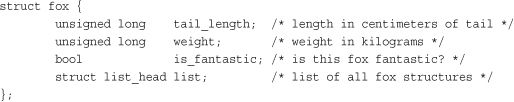
The list needs to be initialized before it can be used. Because most of the elements are created dynamically (probably why you need a linked list), the most common way of initializing the linked list is at runtime:
struct fox *red_fox;
red_fox = kmalloc(sizeof(*red_fox), GFP_KERNEL);
red_fox->tail_length = 40;
red_fox->weight = 6;
red_fox->is_fantastic = false;
INIT_LIST_HEAD(&red_fox->list);
If the structure is statically created at compile time, and you have a direct reference to it, you can simply do this:
struct fox red_fox = {
.tail_length = 40,
.weight = 6,
.list = LIST_HEAD_INIT(red_fox. list),
};
The previous section shows how easy it is to take an existing structure—such as our struct fox example—and turn it into a linked list. With simple code changes, our structure is now manageable by the kernel’s linked list routines. But before we can use those routines, we need a canonical pointer to refer to the list as a whole—a head pointer.
One nice aspect of the kernel’s linked list implementation is that our fox nodes are indistinguishable. Each contains a list_head, and we can iterate from any one node to the next, until we have seen every node. This approach is elegant, but you will generally want a special pointer that refers to your linked list, without being a list node itself. Interestingly, this special node is in fact a normal list_head:
static LIST_HEAD(fox_list);
This defines and initializes a list_head named fox_list. The majority of the linked list routines accept one or two parameters: the head node or the head node plus an actual list node. Let’s look at those routines.
The kernel provides a family of functions to manipulate linked lists. They all take pointers to one or more list_head structures. The functions are implemented as inline functions in generic C and can be found in <linux/list.h>.
Interestingly, all these functions are O(1).1 This means they execute in constant time, regardless of the size of the list or any other inputs. For example, it takes the same amount of time to add or remove an entry to or from a list whether that list has 3 or 3,000 entries. This is perhaps not surprising, but still good to know.
1
See the section “Algorithmic Complexity,” later in this chapter, for a discussion on O(1).
To add a node to a linked list:
list_add(struct list_head *new, struct list_head *head)
This function adds the new node to the given list immediately after the head node. Because the list is circular and generally has no concept of first or last nodes, you can pass any element for head. If you do pass the “last” element, however, this function can be used to implement a stack.
Returning to our fox example, assume we had a new struct fox that we wanted to add to the fox_list list. We’d do this:
list_add(&f->list, &fox_list);
To add a node to the end of a linked list:
list_add_tail(struct list_head *new, struct list_head *head)
This function adds the new node to the given list immediately before the head node. As with list_add(), because the lists are circular, you can generally pass any element for head. This function can be used to implement a queue, however, if you pass the “first” element.
After adding a node to a linked list, deleting a node from a list is the next most important operation. To delete a node from a linked list, use list_del():
list_del(struct list_head *entry)
This function removes the element entry from the list. Note that it does not free any memory belonging to entry or the data structure in which it is embedded; this function merely removes the element from the list. After calling this, you would typically destroy your data structure and the list_head inside it.
For example, to delete the fox node we previous added to fox_list:
list_del(&f->list);
Note the function does not receive as input fox_list. It simply receives a specific node and modifies the pointers of the previous and subsequent nodes such that the given node is no longer part of the list. The implementation is instructive:
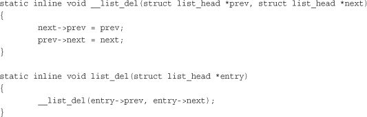
To delete a node from a linked list and reinitialize it, the kernel provides list_del_init():
list_del_init(struct list_head *entry)
This function behaves the same as list_del(), except it also reinitializes the given list_head with the rationale that you no longer want the entry in the list, but you can reuse the data structure itself.
To move a node from one list to another
list_move(struct list_head *list, struct list_head *head)
This function removes the list entry from its linked list and adds it to the given list after the head element.
To move a node from one list to the end of another
list_move_tail(struct list_head *list, struct list_head *head)
This function does the same as list_move(), but inserts the list element before the head entry.
To check whether a list is empty
list_empty(struct list_head *head)
This returns nonzero if the given list is empty; otherwise, it returns zero.
To splice two unconnected lists together
list_splice(struct list_head *list, struct list_head *head)
This function splices together two lists by inserting the list pointed to by list to the given list after the element head.
To splice two unconnected lists together and reinitialize the old list
list_splice_init(struct list_head *list, struct list_head *head)
This function works the same as list_splice(), except that the emptied list pointed to by list is reinitialized.
Saving a Couple Dereferences
If you happen to already have the
nextandprevpointers available, you can save a couple cycles (specifically, the dereferences to get the pointers) by calling the internal list functions directly. Every previously discussed function actually does nothing except find thenextandprevpointers and then call the internal functions. The internal functions generally have the same name as their wrappers, except they are prefixed by double underscores. For example, rather than calllist_del(list), you can call__list_del(prev, next). This is useful only if the next and previous pointers are already dereferenced. Otherwise, you are just writing ugly code. See the header<linux/list.h>for the exact interfaces.
Now you know how to declare, initialize, and manipulate a linked list in the kernel. This is all very well and good, but it is meaningless if you have no way to access your data! The linked lists are just containers that hold your important data; you need a way to use lists to move around and access the actual structures that contain the data. The kernel (thank goodness) provides a nice set of interfaces for traversing linked lists and referencing the data structures that include them.
Note that, unlike the list manipulation routines, iterating over a linked list in its entirety is clearly an O(n) operation, for n entries in the list.
The most basic way to iterate over a list is with the list_for_each()macro. The macro takes two parameters, both list_head structures. The first is a pointer used to point to the current entry; it is a temporary variable that you must provide. The second is the list_head acting as the head node of the list you want to traverse (see the earlier section, “List Heads”). On each iteration of the loop, the first parameter points to the next entry in the list, until each entry has been visited. Usage is as follows:
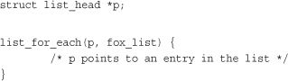
Well, that is still worthless! A pointer to the list structure is usually no good; what we need is a pointer to the structure that contains the list_head. For example, with the previous fox structure example, we want a pointer to each fox, not a pointer to the list member in the structure. We can use the macro list_entry(), which we discussed earlier, to retrieve the structure that contains a given list_head. For example:
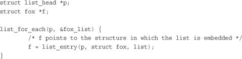
The previous approach does not make for particularly intuitive or elegant code, although it does illustrate how list_head nodes function. Consequently, most kernel code uses the list_for_each_entry() macro to iterate over a linked list. This macro handles the work performed by list_entry(), making list iteration simple:
list_for_each_entry(pos, head, member)
Here, pos is a pointer to the object containing the list_head nodes. Think of it as the return value from list_entry(). head is a pointer to the list_head head node from which you want to start iterating—in our previous example, fox_list. member is the variable name of the list_head structure in pos—list in our example. This sounds confusing, but it is easy to use. Here is how we would rewrite the previous list_for_each() to iterate over every fox node:
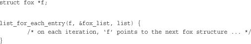
Now let’s look at a real example, from inotify, the kernel’s filesystem notification system:
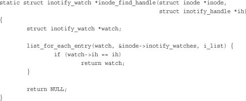
This function iterates over all the entries in the inode->inotify_watches list. Each entry is of type struct inotify_watch and the list_head in that structure is named i_list. With each iteration of the loop, watch points at a new node in the list. The purpose of this simple function is to search the inotify_watches list in the provided inode structure to find an inotify_watch entry whose inotify_handle matches the provided handle.
The macro list_for_each_entry_reverse() works just like list_for_each_entry(), except that it moves through the list in reverse. That is, instead of following the next pointers forward through the list, it follows the prev pointers backward. Usage is the same as with list_for_each_entry():
list_for_each_entry_reverse(pos, head, member)
There are only a handful of reasons to favor moving through a list in reverse. One is performance: If you know the item you are searching for is likely behind the node you are starting your search from, you can move backward in hopes of finding it sooner. A second reason is if ordering is important. For example, if you use a linked list as a stack, you can walk the list from the tail backward to achieve last-in/first-out (LIFO) ordering. If you do not have an explicit reason to move through the list in reverse, don’t—just use list_for_each_entry().
The standard list iteration methods are not appropriate if you are removing entries from the list as you iterate. The standard methods rely on the fact that the list entries are not changing out from under them, and thus if the current entry is removed in the body of the loop, the subsequent iteration cannot advance to the next (or previous) pointer. This is a common pattern in loops, and programmers solve it by storing the next (or previous) pointer in a temporary variable prior to a potential removal operation. The Linux kernel provides a routine to handle this situation for you:
list_for_each_entry_safe(pos, next, head, member)
You use this version in the same manner as list_for_each_entry(), except that you provide the next pointer, which is of the same type as pos. The next pointer is used by the list_for_each_entry_safe() macro to store the next entry in the list, making it safe to remove the current entry. Let’s consider an example, again in inotify:
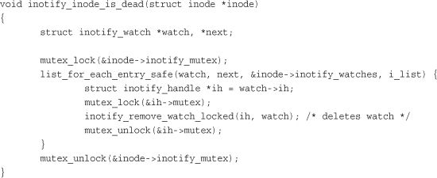
This function iterates over and removes all the entries in the inotify_watches list. If the standard list_for_each_entry() were used, this code would introduce a use-after-free bug, as moving to the next item in the list would require accessing watch, which was destroyed.
If you need to iterate over a linked list in reverse and potentially remove elements, the kernel provides list_for_each_entry_safe_reverse():
list_for_each_entry_safe_reverse(pos, n, head, member)
Usage is the same as with list_for_each_entry_safe().
You May Still Need Locking!
The “safe” variants of
list_for_each_entry()protect you only from removals from the list within the body of the loop. If there is a chance of concurrent removals from other code—or any other form of concurrent list manipulation—you need to properly lock access to the list.See Chapters 9, “An Introduction to Kernel Synchronization,” and Chapter 10, “Kernel Synchronization Methods,” for a discussion on synchronization and locking.
Linux provides myriad other list methods, enabling seemingly every conceivable way to access and manipulate a linked list. All these methods are defined in the header file <linux/list.h>.
A common programming pattern in any operating system kernel is producer and consumer. In this pattern, a producer creates data—say, error messages to be read or networking packets to be processed—while a consumer, in turn, reads, processes, or otherwise consumes the data. Often the easiest way to implement this pattern is with a queue. The producer pushes data onto the queue and the consumer pulls data off the queue. The consumer retrieves the data in the order it was enqueued. That is, the first data on the queue is the first data off the queue. For this reason, queues are also called FIFOs, short for first-in, first-out. See Figure 6.5 for an example of a standard queue.
Figure 6.5. A queue (FIFO).
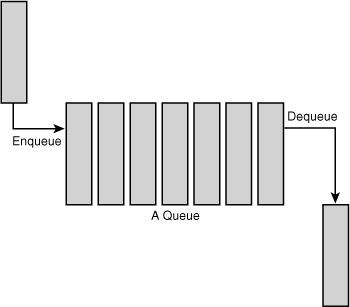
The Linux kernel’s generic queue implementation is called kfifo and is implemented in kernel/kfifo.c and declared in <linux/kfifo.h>. This section discusses the API after an update in 2.6.33. Usage is slightly different in kernel versions prior to 2.6.33—double-check <linux/kfifo.h> before writing code.
Linux’s kfifo works like most other queue abstractions, providing two primary operations: enqueue (unfortunately named in) and dequeue (out). The kfifo object maintains two offsets into the queue: an in offset and an out offset. The in offset is the location in the queue to which the next enqueue will occur. The out offset is the location in the queue from which the next dequeue will occur. The out offset is always less than or equal to the in offset. It wouldn’t make sense for it to be greater; otherwise, you could dequeue data that had not yet been enqueued.
The enqueue (in) operation copies data into the queue, starting at the in offset. When complete, the in offset is incremented by the amount of data enqueued. The dequeue (out) operation copies data out of the queue, starting from the out offset. When complete, the out offset is incremented by the amount of data enqueued. When the out offset is equal to the in offset, the queue is empty: No more data can be dequeued until more data is enqueued. When the in offset is equal to the length of the queue, no more data can be enqueued until the queue is reset.
To use a kfifo, you must first define and initialize it. As with most kernel objects, you can do this dynamically or statically. The most common method is dynamic:
int kfifo_alloc(struct kfifo *fifo, unsigned int size, gfp_t gfp_mask);
This function creates and initializes a kfifo with a queue of size bytes. The kernel uses the gfp mask
gfp_mask to allocate the queue. (We discuss memory allocations in Chapter 12, “Memory Management”). Upon success, kfifo_alloc() returns zero; on error it returns a negative error code. Following is a simple example:
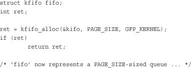
If you want to allocate the buffer yourself, you can:
void kfifo_init(struct kfifo *fifo, void *buffer, unsigned int size);
This function creates and initializes a kfifo that will use the size bytes of memory pointed at by buffer for its queue. With both kfifo_alloc() and kfifo_init(), size must be a power of two.
Statically declaring a kfifo is simpler, but less common:
DECLARE_KFIFO(name, size);
INIT_KFIFO(name);
This creates a static kfifo named name with a queue of size bytes. As before, size must be a power of 2.
When your kfifo is created and initialized, enqueuing data into the queue is performed via the kfifo_in() function:
unsigned int kfifo_in(struct kfifo *fifo, const void *from, unsigned int len);
This function copies the len bytes starting at from into the queue represented by fifo. On success it returns the number of bytes enqueued. If less than len bytes are free in the queue, the function copies only up to the amount of available bytes. Thus the return value can be less than len or even zero, if nothing was copied.
When you add data to a queue with kfifo_in(), you can remove it with kfifo_out():
unsigned int kfifo_out(struct kfifo *fifo, void *to, unsigned int len);
This function copies at most len bytes from the queue pointed at by fifo to the buffer pointed at by to. On success the function returns the number of bytes copied. If less than len bytes are in the queue, the function copies less than requested.
When dequeued, data is no longer accessible from the queue. This is the normal usage of a queue, but if you want to “peek” at data within the queue without removing it, you can use kfifo_out_peek():
unsigned int kfifo_out_peek(struct kfifo *fifo, void *to, unsigned int len, unsigned offset);
This works the same as kfifo_out(), except that the out offset is not incremented, and thus the dequeued data is available to read on a subsequent call to kfifo_out(). The parameter offset specifies an index into the queue; specify zero to read from the head of the queue, as kfifo_out() does.
To obtain the total size in bytes of the buffer used to store a kfifo’s queue, call kfifo_size():
static inline unsigned int kfifo_size(struct kfifo *fifo);
In another example of horrible kernel naming, use kfifo_len() to obtain the number of bytes enqueued in a kfifo:
static inline unsigned int kfifo_len(struct kfifo *fifo);
To find out the number of bytes available to write into a kfifo, call kfifo_avail():
static inline unsigned int kfifo_avail(struct kfifo *fifo);
Finally, kfifo_is_empty() and kfifo_is_full() return nonzero if the given kfifo is empty or full, respectively, and zero if not:
static inline int kfifo_is_empty(struct kfifo *fifo);
static inline int kfifo_is_full(struct kfifo *fifo);
To reset a kfifo, jettisoning all the contents of the queue, call kfifo_reset():
static inline void kfifo_reset(struct kfifo *fifo);
To destroy a kfifo allocated with kfifo_alloc(), call kfifo_free():
void kfifo_free(struct kfifo *fifo);
If you created your kfifo with kfifo_init(), it is your responsibility to free the associated buffer. How you do so depends on how you created it. See Chapter 12 for a discussion on allocating and freeing dynamic memory.
With these interfaces under our belt, let’s take a look at a simple example of using a kfifo. Assume we created a kfifo pointed at by fifo with a queue size of 8KB. We can now enqueue data onto the queue. In this example, we enqueue simple integers. In your own code, you will likely enqueue more complicated, task-specific structures. Using integers in this example, let’s see exactly how the kfifo works:
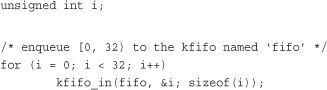
The kfifo named fifo now contains 0 through 31, inclusive. We can take a peek at the first item in the queue and verify it is 0:
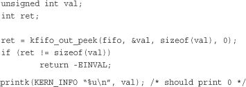
To dequeue and print all the items in the kfifo, we can use kfifo_out():
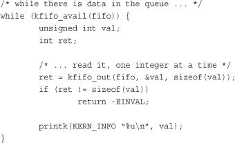
This prints 0 through 31, inclusive, and in that order. (If this code snippet printed the numbers backward, from 31 to 0, we would have a stack, not a queue.)
A map, also known as an associative array, is a collection of unique keys, where each key is associated with a specific value. The relationship between a key and its value is called a mapping. Maps support at least three operations:
• Add (key, value)
• Remove (key)
• value = Lookup (key)
Although a hash table is a type of map, not all maps are implemented via hashes. Instead of a hash table, maps can also use a self-balancing binary search tree to store their data. Although a hash offers better average-case asymptotic complexity (see the section “Algorithmic Complexity” later in this chapter), a binary search tree has better worst-case behavior (logarithmic versus linear). A binary search tree also enables order preservation, enabling users to efficiently iterate over the entire collection in a sorted order. Finally, a binary search tree does not require a hash function; instead, any key type is suitable so long as it can define the <= operator.
Although the general term for all collections mapping a key to a value, the name maps often refers specifically to an associated array implemented using a binary search tree as opposed to a hash table. For example, the C++ STL container std::map is implemented using a self-balancing binary search tree (or similar data structure), because it provides the ability to in-order traverse the collection.
The Linux kernel provides a simple and efficient map data structure, but it is not a general-purpose map. Instead, it is designed for one specific use case: mapping a unique identification number (UID) to a pointer. In addition to providing the three main map operations, Linux’s implementation also piggybacks an allocate operation on top of the add operation. This allocate operation not only adds a UID/value pair to the map but also generates the UID.
The idr data structure is used for mapping user-space UIDs, such as inotify watch descriptors or POSIX timer IDs, to their associated kernel data structure, such as the inotify_watch or k_itimer structures, respectively. Following the Linux kernel’s scheme of obfuscated, confusing names, this map is called idr.
Setting up an idr is easy. First you statically define or dynamically allocate an idr structure. Then you call idr_init():
void idr_init(struct idr *idp);
For example:
struct idr id_huh; /* statically define idr structure */
idr_init(&id_huh); /* initialize provided idr structure */
Once you have an idr set up, you can allocate a new UID, which is a two-step process. First you tell the idr that you want to allocate a new UID, allowing it to resize the backing tree as necessary. Then, with a second call, you actually request the new UID. This complication exists to allow you to perform the initial resizing, which may require a memory allocation, without a lock. We discuss memory allocations in Chapter 12 and locking in Chapters 9 and 10. For now, let’s concentrate on using idr without concern to how we handle locking.
The first function, to resize the backing tree, is idr_pre_get():
int idr_pre_get(struct idr *idp, gfp_t gfp_mask);
This function will, if needed to fulfill a new UID allocation, resize the idr pointed at by idp. If a resize is needed, the memory allocation will use the gfp flags
gfp_mask (gfp flags are discussed in Chapter 12). You do not need to synchronize concurrent access to this call. Inverted from nearly every other function in the kernel, idr_pre_get() returns one on success and zero on error—be careful!
The second function, to actually obtain a new UID and add it to the idr, is idr_get_new():
int idr_get_new(struct idr *idp, void *ptr, int *id);
This function uses the idr pointed at by idp to allocate a new UID and associate it with the pointer ptr. On success, the function returns zero and stores the new UID in id. On error, it returns a nonzero error code: -EAGAIN if you need to (again) call idr_pre_get() and -ENOSPC if the idr is full.
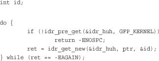
If successful, this snippet obtains a new UID, which is stored in the integer id and maps that UID to ptr (which we don’t define in the snippet).
The function idr_get_new_above() enables the caller to specify a minimum UID value to return:
int idr_get_new_above(struct idr *idp, void *ptr, int starting_id, int *id);
This works the same as idr_get_new(), except that the new UID is guaranteed to be equal to or greater than starting_id. Using this variant of the function allows idr users to ensure that a UID is never reused, allowing the value to be unique not only among currently allocated IDs but across the entirety of a system’s uptime. This code snippet is the same as our previous example, except that we request strictly increasing UID values:
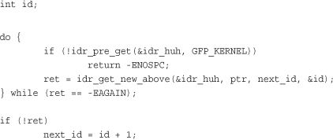
When we have allocated some number of UIDs in an idr, we can look them up: The caller provides the UID, and the idr returns the associated pointer. This is accomplished, in a much simpler manner than allocating a new UID, with the idr_find() function:
void *idr_find(struct idr *idp, int id);
A successful call to this function returns the pointer associated with the UID id in the idr pointed at by idp. On error, the function returns NULL. Note if you mapped NULL to a UID with idr_get_new() or idr_get_new_above(), this function successfully returns NULL, giving you no way to distinguish success from failure. Consequently, you should not map UIDs to NULL.
struct my_struct *ptr = idr_find(&idr_huh, id);
if (!ptr)
return -EINVAL; /* error */
To remove a UID from an idr, use idr_remove():
void idr_remove(struct idr *idp, int id);
A successful call to idr_remove() removes the UID id from the idr pointed at by idp. Unfortunately, idr_remove() has no way to signify error (for example if id is not in idp).
Destroying an idr is a simple affair, accomplished with the idr_destroy()function:
void idr_destroy(struct idr *idp);
A successful call to idr_destroy() deallocates only unused memory associated with the idr pointed at by idp. It does not free any memory currently in use by allocated UIDs. Generally, kernel code wouldn’t destroy its idr facility until it was shutting down or unloading, and it wouldn’t unload until it had no more users (and thus no more UIDs), but to force the removal of all UIDs, you can call idr_remove_all():
void idr_remove_all(struct idr *idp);
You would call idr_remove_all() on the idr pointed at by idp
before calling idr_destroy(), ensuring that all idr memory was freed.
A tree is a data structure that provides a hierarchical tree-like structure of data. Mathematically, it is an acyclic, connected, directed graph in which each vertex (called a node) has zero or more outgoing edges and zero or one incoming edges. A binary tree is a tree in which nodes have at most two outgoing edges—that is, a tree in which nodes have zero, one, or two children. See Figure 6.6 for a sample binary tree.
Figure 6.6. A binary tree.
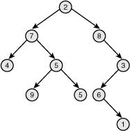
A binary search tree (often abbreviated BST) is a binary tree with a specific ordering imposed on its nodes. The ordering is often defined via the following induction:
• The left subtree of the root contains only nodes with values less than the root.
• The right subtree of the root contains only nodes with values greater than the root.
• All subtrees are also binary search trees.
A binary search tree is thus a binary tree in which all nodes are ordered such that left children are less than their parent in value and right children are greater than their parent. Consequently, both searching for a given node and in-order traversal are efficient (logarithmic and linear, respectively). See Figure 6.7 for a sample binary search tree.
Figure 6.7. A binary search tree (BST).
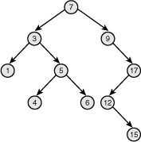
The depth of a node is measured by how many parent nodes it is from the root. Nodes at the “bottom” of the tree—those with no children—are called leaves. The height of a tree is the depth of the deepest node in the tree. A balanced binary search tree is a binary search tree in which the depth of all leaves differs by at most one (see Figure 6.8). A self-balancing binary search tree is a binary search tree that attempts, as part of its normal operations, to remain (semi) balanced.
Figure 6.8. A balanced binary search tree.
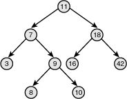
A red-black tree is a type of self-balancing binary search tree. Linux’s primary binary tree data structure is the red-black tree. Red-black trees have a special color attribute, which is either red or black. Red-black trees remain semi-balanced by enforcing that the following six properties remain true:
Taken together, these properties ensure that the deepest leaf has a depth of no more than double that of the shallowest leaf. Consequently, the tree is always semi-balanced. Why this is true is surprisingly simple. First, by property five, a red node cannot be the child or parent of another red node. By property six, all paths through the tree to its leaves have the same number of black nodes. The longest path through the tree alternates red and black nodes. Thus the shortest path, which must have the same number of black nodes, contains only black nodes. Therefore, the longest path from the root to a leaf is no more than double the shortest path from the root to any other leaf.
If the insertion and removal operations enforce these six properties, the tree remains semi-balanced. Now, it might seem odd to require insert and remove to maintain these particular properties. Why not implement the operations such that they enforce other, simpler rules that result in a balanced tree? It turns out that these properties are relatively easy to enforce (although complex to implement), allowing insert and remove to guarantee a semi-balanced tree without burdensome extra overhead.
Describing how insert and remove enforce these rules is beyond the scope of this book. Although simple rules, the implementation is complex. Any good undergraduate-level data structures textbook ought to give a full treatment.
The Linux implementation of red-black trees is called rbtrees. They are defined in lib/rbtree.c and declared in <linux/rbtree.h>. Aside from optimizations, Linux’s rbtrees resemble the “classic” red-black tree as described in the previous section. They remain balanced such that inserts are always logarithmic with respect to the number of nodes in the tree.
The root of an rbtree is represented by the rb_root structure. To create a new tree, we allocate a new rb_root and initialize it to the special value RB_ROOT:
struct rb_root root = RB_ROOT;
Individual nodes in an rbtree are represented by the rb_node structure. Given an rb_node, we can move to its left or right child by following pointers off the node of the same name.
The rbtree implementation does not provide search and insert routines. Users of rbtrees are expected to define their own. This is because C does not make generic programming easy, and the Linux kernel developers believed the most efficient way to implement search and insert was to require each user to do so manually, using provided rbtree helper functions but their own comparison operators.
The best way to demonstrate search and insert is to show a real-world example. First, let’s look at search. The following function implements a search of Linux’s page cache for a chunk of a file (represented by an inode and offset pair). Each inode has its own rbtree, keyed off of page offsets into file. This function thus searches the given inode’s rbtree for a matching offset value:
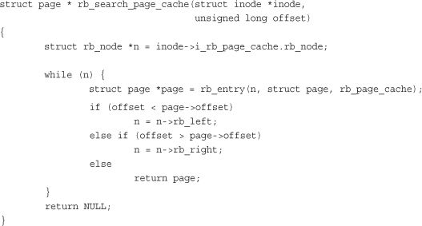
In this example, the while loop iterates over the rbtree, traversing as needed to the left or right child in the direction of the given offset. The if and else statements implement the rbtree’s comparison function, thus enforcing the tree’s ordering. If the loop finds a node with a matching offset, the search is complete, and the function returns the associated page structure. If the loop reaches the end of the rbtree without finding a match, one does not exist in the tree, and the function returns NULL.
Insert is even more complicated because it implements both search and insertion logic. The following isn’t a trivial function, but if you need to implement your own insert routine, this is a good guide:
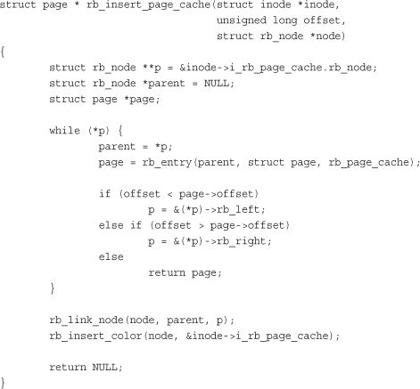
As with our search function, the while loop is iterating over the tree, moving in the direction of the provided offset. Unlike with search, however, the function is hoping not to find a matching offset but, instead, reach the leaf node that is the correct insertion point for the new offset. When the insertion point is found, rb_link_node() is called to insert the new node at the given spot. rb_insert_color() is then called to perform the complicated rebalancing dance. The function returns NULL if the page was added to the page cache and the address of an existing page structure if the page is already in the cache.
Thus far we’ve discussed four of Linux’s most important data structures: linked lists, queues, maps, and red-black trees. In this section, we cover some tips to help you decide which data structure to use in your own code.
If your primary access method is iterating over all your data, use a linked list. Intuitively, no data structure can provide better than linear complexity when visiting every element, so you should favor the simplest data structure for that simple job. Also consider linked lists when performance is not important, when you need to store a relatively small number of items, or when you need to interface with other kernel code that uses linked lists.
If your code follows the producer/consumer pattern, use a queue, particularly if you want (or can cope with) a fixed-size buffer. Queues make adding and removing items simple and efficient, and they provide first-in, first-out (FIFO) semantics, which is what most producer/consumer use cases demand. On the other hand, if you need to store an unknown, potentially large number of items, a linked list may make more sense, because you can dynamically add any number of items to the list.
If you need to map a UID to an object, use a map. Maps make such mappings easy and efficient, and they also maintain and allocate the UID for you. Linux’s map interface, being specific to UID-to-pointer mappings, isn’t good for much else, however. If you are dealing with descriptors handed out to user-space, consider this option.
If you need to store a large amount of data and look it up efficiently, consider a red-black tree. Red-black trees enable the searching in logarithmic time, while still providing an efficient linear time in-order traversal. Although more complicated to implement than the other data structures, their in-memory footprint isn’t significantly worse. If you are not performing many time-critical look-up operations, a red-black tree probably isn’t your best bet. In that case, favor a linked list.
None of these data structures fit your needs? The kernel implements other seldom-used data structures that might meet your needs, such as radix trees (a type of trie) and bitmaps. Only after exhausting all kernel-provided solutions should you consider “rolling your own” data structure. One common data structure often implemented in individual source files is the hash table. Because a hash table is little more than some buckets and a hash function, and the hash function is so specific to each use case, there is little value in providing a kernelwide solution in a nongeneric programming language such as C.
Often, in computer science and related disciplines, it is useful to express the algorithmic complexity—or scalability—of algorithms quantitatively. Various methods exist for representing scalability. One common technique is to study the asymptotic behavior of the algorithm. This is the behavior of the algorithm because its inputs grow exceedingly large and approach infinity. Asymptotic behavior shows how well an algorithm scales as its input grows larger and larger. Studying an algorithm’s scalability—how it performs as the size of its input increases—enables us to model the algorithm against a benchmark and better understand its behavior.
An algorithm is a series of instructions, possibly one or more inputs, and ultimately a result or output. For example, the steps carried out to count the number of people in a room are an algorithm, with the people being the input and the count being the output. In the Linux kernel, both page eviction and the process scheduler are examples of algorithms. Mathematically, an algorithm is like a function. (Or at least, you can model it as one.) For example, if you call the people counting algorithm f and the number of people to count x, you can write
y = f(x) people counting function
where y is the time required to count the x people.
One useful asymptotic notation is the upper bound, which is a function whose value, after an initial point, is always greater than the value of the function that you are studying. It is said that the upper bound grows as fast or faster than the function in question. A special notation, big-o (pronounced big oh) notation, is used to describe this growth. It is written f(x) is O(g(x)) and is read as f is big-oh of g. The formal mathematical definition is
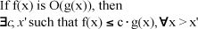
In English, the time to complete f(x) is always less than or equal to the time to complete g(x) multiplied by some arbitrary constant, so long as the input x is larger than some initial value x'.
Essentially, you are looking for a function whose behavior is as bad as or worse than the algorithm. You can then look at the result of large inputs to this function and obtain an understanding of the bound of your algorithm.
When most people talk about big-o notation, they are more accurately referring to what Donald Knuth describes as big-theta notation. Technically, big-o notation refers to an upper bound. For example, 7 is an upper bound of 6; so are 9, 12, and 65. Subsequently, when most people discuss function growth, they talk about the least upper bound, or a function that models both the upper and lower bounds.2 Professor Knuth, the father of the field of algorithmic analysis, describes this as big-theta notation and gives the following definition:
2
If you’re curious, the lower bound is modeled by big-omega notation. The definition is the same as big-o, except g(x) is always less than or equal to f(x), not greater than or equal to. Big-omega notation is less useful than big-o because finding functions smaller than your function is rarely indicative of behavior.
If f(x) is big-theta of g(x), then
g(x) is both an upper bound and a
lower bound for f(x).
Then, you can say that f(x) is of order
g(x). The order, or big-theta, of an algorithm is one of the most important mathematical tools for understanding algorithms in the kernel.
Consequently, when people refer to big-o notation, they are more often talking about the least such big-o, the big-theta. You really do not have to worry about this, unless you want to make Professor Knuth really happy.
Consider the original example of having to count the number of people in a room. Pretend you can count one person per second. Then, if there are 7 people in the room, it will take 7 seconds to count them. More generally, given n people it will take n seconds to count everyone. Thus, you can say this algorithm is O(n). What if the task was to dance in front of everyone in the room? Because it would take the same amount of time to dance whether there were 5 or 5,000 people in the room, this task is O(1). See Table 6.1 for other common complexities.
Table 6.1. Table of Common Time Complexity Values
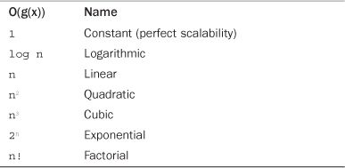
What is the complexity of introducing everyone in the room to everyone else? What is a possible function that models this algorithm? If it took 30 seconds to introduce each person, how long would it take to introduce 10 people to each other? What about 100 people to each other? Understanding how an algorithm performs as it has ever more work to do is a crucial component in determining the best algorithm for a given job.
Of course, it is wise to avoid complexities such as O(n!) or O(2n). Likewise, it is usually an improvement to replace an O(n) algorithm with a functionally equivalent O(log n) algorithm. This is not always the case, however, and a blind assumption should not be made based solely on big-o notation. Recall that, given O(g(x)), there is a constant, c, multiplied by g(x). Therefore, it is possible that an O(1) algorithm takes 3 hours to complete. Sure, it is always 3 hours, regardless of how large the input, but that can still be a long time compared to an O(n) algorithm with few inputs. The typical input size should always be taken into account when comparing algorithms.
Favor less complex algorithms, but keep in mind the overhead of the algorithm in relation to the typical input size. Do not blindly optimize to a level of scalability you will never need to support!
In this chapter, we discussed many of the generic data structures that Linux kernel developers use to implement everything from the process scheduler to device drivers. You will find these data structures useful as we continue our study of the Linux kernel. When writing your own kernel code, always reuse existing kernel infrastructure and don’t reinvent the wheel.
We also covered algorithmic complexity and tools for measuring and expressing it, the most notable being big-o notation. Throughout this book and the Linux kernel, big-o notation is an important notion of how well algorithms and kernel components scale in light of many users, processes, processors, network connections, and other ever-expanding inputs.